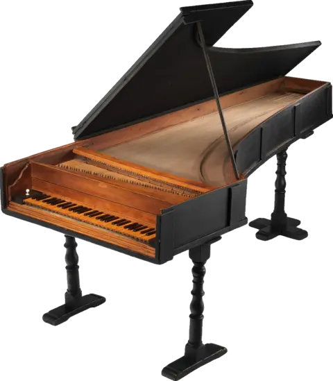
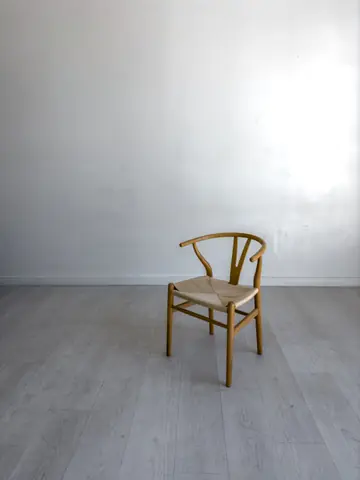
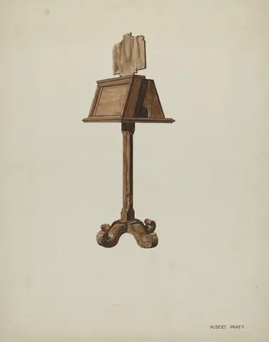
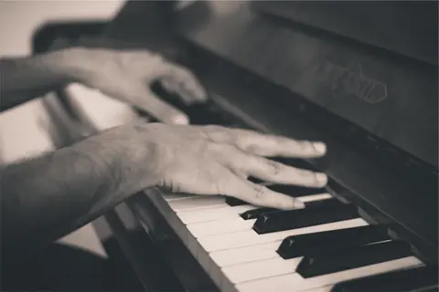
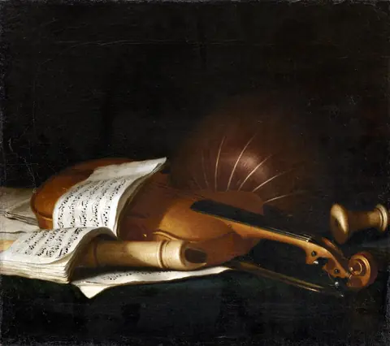

Тихий зал(сезон 2026/27)
- Камерная музыка
- Пятница, 19:30
- Сорок мест
Квартеты, сонаты и трио в бывшей переплётной мастерской на Петроградской стороне. Без сцены и микрофонов: музыканты сидят в трёх метрах от первого ряда.
(дальше афиша)(Афиша на осень)
Подробности
- Двери открываем в 19:00
- Начинаем в 19:30, без антракта
- Сорок мест, садитесь где удобно
- Билет платите на входе

Зал — это бывшая переплётная мастерская с деревянным полом и высокими окнами во двор. Сцены нет: стулья стоят полукругом, музыканты играют без подзвучки, и слышно, как вдыхает скрипач перед вступлением.
Перед каждым произведением исполнители пару минут рассказывают, на что обратить внимание. После концерта ставим чайник, и можно расспросить тех, кто только что играл.
Записываться нужно заранее: мест немного, и мы держим их до 19:25. Если планы поменялись, напишите нам, и место достанется следующему в очереди.
(Как проходит вечер)
-

19:00 Открываем двери. Можно занять любое место и оставить пальто в гардеробе.
-

19:30 Несколько слов о программе от самих музыкантов.
-

19:40 Музыка. Около полутора часов, без антракта.
-

21:10 Чай и разговоры. Можно спросить про инструмент, ноты или любимую запись.
Билеты онлайн не продаём, просто запишитесь